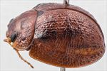
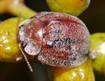
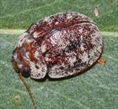
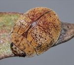
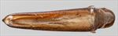
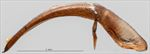
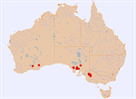

Click on images to enlarge


Male, Yanac, Victoria


Female, Cowell, Eyre Peninsula, South Australia


Male, Quorn, South Australia


Female, Balladonia, Western Australia


Aedeagus, dorsal view (Mangalo, Eyre Peninsula, South Australia)


Aedeagus, lateral view (Mangalo, Eyre Peninsula, South Australia)


Distribution
Name
Trachymela fumata (Blackburn)
Reference specimen
2017-155, Mangalo, South Australia.
Adult Description
Length: ♂ 5.8–6.9 mm (n=10), ♀ 6.8–8.4 mm (n=15).
Colouration:
- Head: light- to mid-brown with a black band behind fronto-clypeal suture extending almost to eye on either side, sometimes this band is split into two separate spots, one on each side of central suture, less often these markings are reduced in size or dark brown, rarely completely absent, rarely dark flecks may be present anterior to fronto-clypeal suture; labrum straw-brown, mandibles black-tipped; antennomeres straw-brown, usually uniformly so, sometimes with distal extremities of outer antennomeres slightly darker.
- Pronotum: brown, concolorous with head, often completely so (all females), males usually with a small round black or dark brown macula behind each eye, less often dark infuscation may be present along anterior edge.
- Scutellum: brown, concolorous with pronotum, broadly edged in a slightly darker shade.
- Elytra: brown, similar or fractionally darker shade than pronotum, with black markings that are very variable in extent, most commonly a black or dark brown band extends posteriorly from (and often includes) humeral callus, this band may extend for as much as 2/3 of elytral length or may be much shorter, is often fragmented or dark only at sites of elevated verrucae; less often, elytral suture from scutellum to summit bordered broadly in black; scattered elevated verrucae in apical third may be black or dark brown; rarely black markings are completely absent, humeral callus may be black, partially black or concolorous with surrounds; punctures are similar to or a noticeably darker shade than interstices.
- Venter & Legs: light- to mid-brown with legs of a similar shade, thoracic ventrites often slightly to much darker, prothoracic ventrites rarely black, inside surface of elytral epipleura brown, sometimes inner margin tending towards black, rarely completely black (a few Victorian specimens).
- Cuticular Wax: very variable in both density and colour, usually quite thick and relatively even layer of greyish or light-brown wax, colour may be uniform throughout or grey in anterior half of insect tending to brown towards posterior, sometimes the grey colour is confined to a faint trace around the transverse depression.
Morphology:
- Head: punctures quite fine (pd ≈ 1–1.5 × ef), especially towards rear of frons, slightly coarser anteriorly, and quite evenly and relatively densely distributed. Antennae relatively long (AL/BL: ♂ 45–47%, ♀ 37–40%), filiform.
- Pronotum: mostly evenly curved transversely with lateral margins noticeably explanate, foveal depression shallow with epidermis usually elevated in a rounded, less densely punctured pustule near its centre (sometimes absent in females), discal area with surface smooth to slightly uneven, puncturation usually clearly impressed, relatively evenly to more unevenly distributed and quite dense (spacing ≈ 1.5–2.5 pd), becoming much coarser towards lateral margins, some much finer punctures may be scattered among the larger ones. Front margins join lateral margins in a smoothly rounded right-angle, with lateral margin initially almost straight before curving smoothly and gradually towards rear margin.
- Scutellum: surface smooth or slightly rough in texture, unpunctured or (rarely) with one or two shallow punctures.
- Elytra: surface slightly unevenly curved longitudinally with elytral summit clearly in front of middle of elytral margin, a broad but very shallow depression extends from just below elytral summit towards the discal margin, surface texture is rough with interstices, especially around and just behind transverse depression, forming extended ridges that mostly run transversely and partially or almost fully obliterate punctures, discrete small round verrucae, most with a fine central puncture, are present mostly in scutellar angle and posterior half of elytra, sometimes the posterior verrucae align in 2–3 longitudinal rows, surface continuous under humeral callus. Vertical extension of epipleura considerable (HCE/PW = 0.38–0.43).
- Venter: prosternal process narrowest anteriorly (sometimes barely so), open or lightly closed anteriorly, at most a sparse scatter of short setae on prosternal process and mesoventrite, a single seta on anterior and median trochanter; front edge of metaventrite beveled, truncate; inner edge of posterior of epipleurae lacking setae.
Male Genitalia (Aedeagus):
- Dimensions: long and thin (LPE/BL = 33–38%), needle-shaped.
- Dorsal view: sides of shaft almost straight, broadest at base, then narrowing very slightly, sides then almost parallel-sided or converging very gradually towards ostium, from where sides converge towards apex in a roughly straight line or smooth curve, dorsal surface smoothly curved with quite well-developed dorso-median channel, dorsolateral channels long, tip protruding slightly.
- Lateral view: shaft almost evenly curved over most of length, thinning towards apex over final 20%, tip deflexed, flagellum very thin and almost invariably broken off.
Immature Stages
Unknown.
Similar species
- Ta230: this species, known only from Western Australia, is slightly smaller than typical specimens of Ta122, but is very similar structurally. It differs in the shape of the aedeagus, whose sides are noticeably sinuate in dorsal view, and which thus widens noticeably from the middle of the central section towards the apex. In lateral view, it is less evenly curved than that of Ta122, with a pronounced curve just anterior to basal sulcus, with the ventral surface then relatively straight almost to apex. The cuticular wax distribution also differs from typical Ta122, with a dense concentration of pale wax in the post-basal depression, like the “transverse” pattern.
- Ta117: this species has a similarly “rugged” elytral sculpture and often features a broad black border to the anterior portion of elytral suture. It is immediately distinguishable by its larger size, with even small specimens of Ta117 exceeding the smallest specimens of Ta122 in length.
- Ta89: the elytral surface of this species can be similarly rugged to that of Ta122 and some specimens may have a black border to anterior half of elytral suture. Males of Ta89 always exceed those of Ta122 in body length, but there is considerable overlap in the size of females. Except for the black along the elytral suture, other black areas on the elytra of Ta89, if present, tend to be confined to the verrucae. The lateral margins of the elytra are noticeably explanate in Ta89, with the apex projecting slightly.
- Ta176: this species can be very similar in the placement of the black markings, viz. above fronto-clypeal suture on the head and a black border to elytral suture between the scutellum and summit. It differs by usually having a considerably smoother elytral surface, verrucae being either absent or very inconspicuous and concolorous, and the completely black or very dark brown prosternum. The cuticular wax layer is also different, being more uniformly brown in Ta176, with just a few quite inconspicuous grey spots on the elytra.
Notes
- Taxonomy: From a comparison with photo and measurements of type specimen in the Natural History Museum, London (BMNH), this species is almost certainly Trachymela fumata (Blackburn).
- Distribution & Abundance: Ta122 is a widespread and relatively abundant species in the mallee areas of southern Australia. It is notable for the large disparity in size of males and females, their distributions of body length overlapping only slightly.
- Host Associations: Ta122 has been recorded from several mallee species that are taxonomically not all closely related. These include Eucalyptus oleosa and E. gracilis (Symphomyrtus : Bisectae), E. brachycalyx and E. incrassata (Symphomyrtus : Dumaria), and E. porosa (Symphomyrtus : Adnataria).
- Morphological Variation: The extent of black on the elytra varies considerably, with rare specimens having none. There is some variation in the shape of the aedeagus. The specimens from Quorn, in particular (from E. porosa), have a parallel-sided central section with a spatula that is more robust, while Victorian specimens tend to have much shorter dorso-lateral channels. A female specimen from Balladonia, Western Australia, found on E. gracilis, lacks any black dorsal colouring, but is structurally and in its cuticular wax distribution very similar to typical specimens of Ta122 from eastern Australia.
Copyright © 2026. All rights reserved.